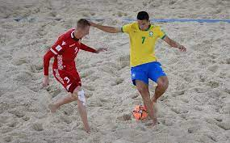
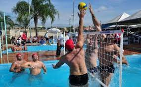
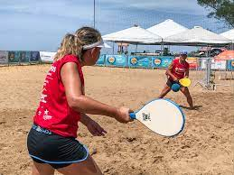

EUA
Brasil
Brasil
Brasil
Tão antigos quanto o homem, os esportes são umas das invenções mais béneficas do homem. Além de manter o corpo saudável, ainda auxiliam na criação de uma série de comportamentos positivos, como a humilde, a união, a empatia, dentre outros.
E os esportes com bola são, sem nenhuma dúvida, os mais populares. Mas você sabe a diferença entre alguns dele? É justamente isso que iremos descobrir abaixo.
| Esporte | Origem | Ambiente | Objetivo | Equipe | ||
| 1 | |
Baseboll | 1971, EUA |
Campo com 1/4 de círculo, de 92 a 108,2m de raio. | Realizar o maior número de corridas. | Nove jogadores em cada time. |
| 2 |  | Beach Soccer | 1930, Brasil |
Quadra de areia com 35 ou 37m x 26 ou 27 de largura. | Realizar gols no campo adversário. | Cinco jogadores por time. |
| 3 |  | Biribol | 1968, Brasil |
Piscina com 4 x 8 x 1,3m | Derrubar a bola na quadra adversária. | 2 a 4 jogadores por time. |
| 4 |  | Frescobol | 1946, Brasil |
Ao ar livre | Manter a bola no ar pelo maior tempo possível. | Geralmente um contra um. |